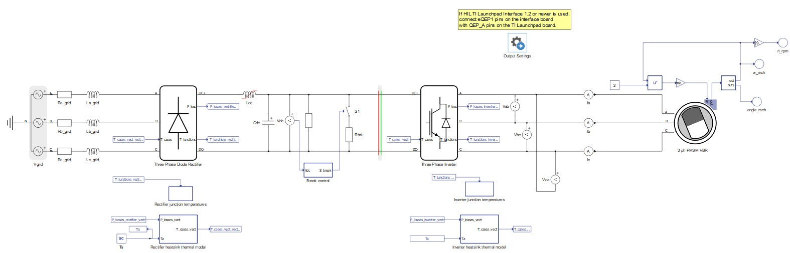
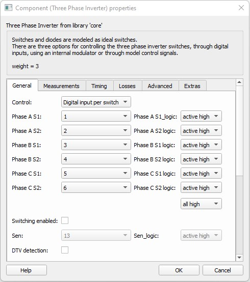
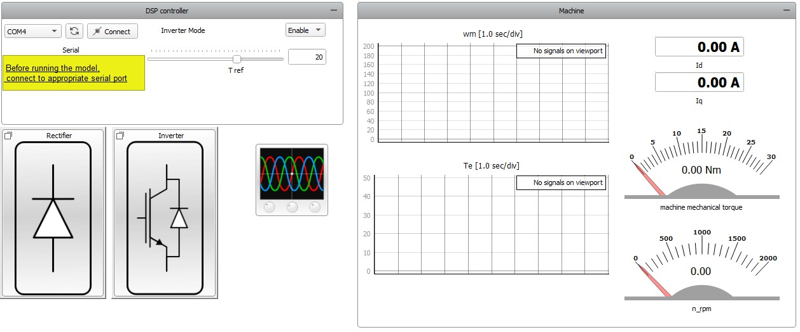
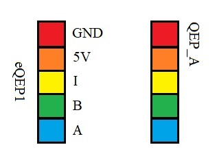
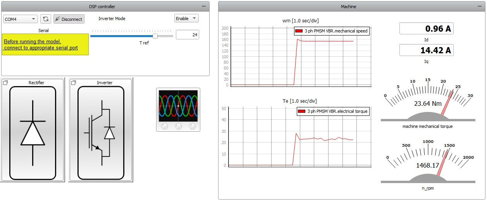
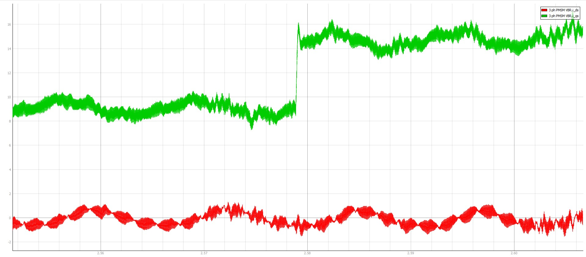
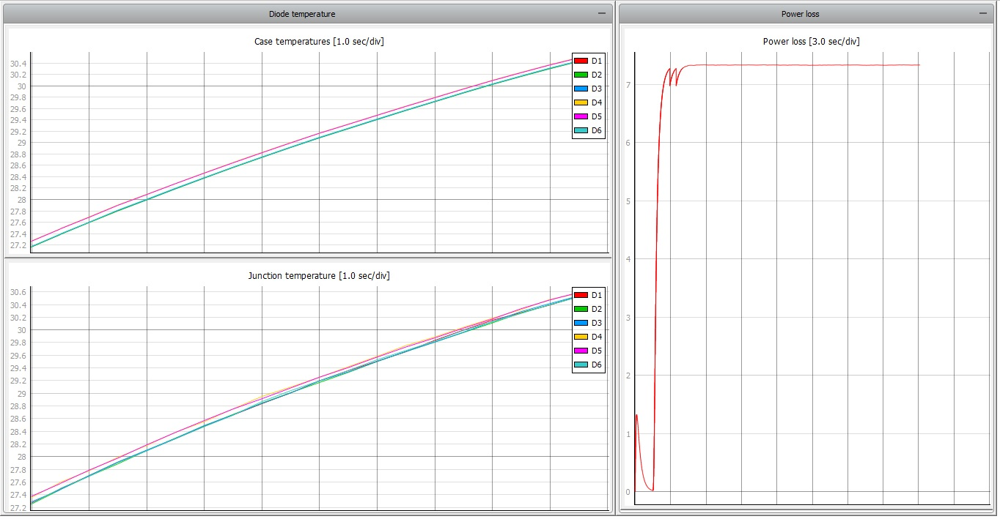
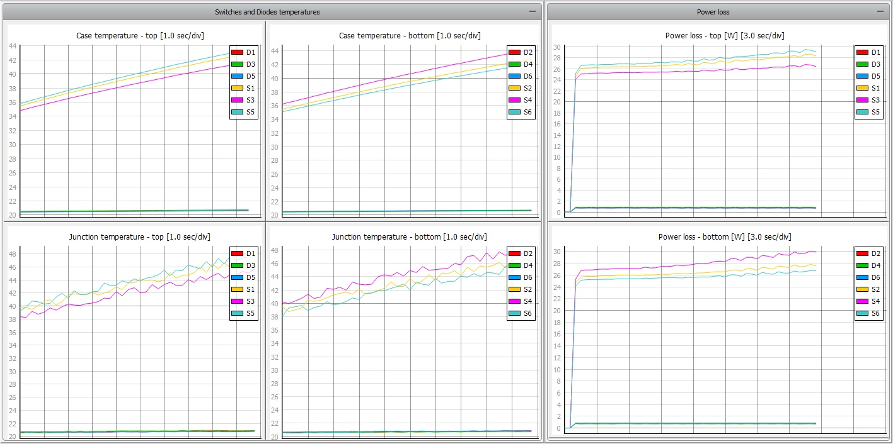
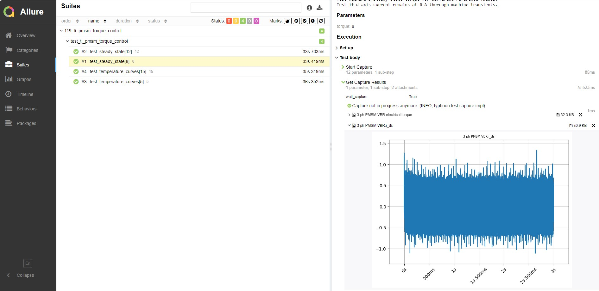
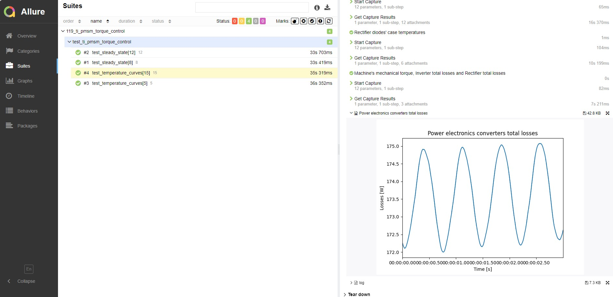

C-HIL: PMSM torque control using Texas Instruments LAUNCHXL-F28379D LaunchPad
Demonstration on how to use a Texas Instruments LaunchPad development kit to implement the control of an electrical drive model emulated in real-time.
Introduction
The Texas Instruments (TI) F28379D LaunchPad development kit comprises of a high-performance dual-core microcontroller architecture for developing advanced control systems. It allows deployment of real-time control algorithms for applications such as industrial drives, inverters and motor control. To properly validate control algorithms, a C-HIL test setup can be used, where the TI LaunchPad can be connected to a Typhoon HIL real-time simulator using the HIL TI Launchpad Interface board. In this way, the controller can be implemented in the real microcontroller while the plant is simulated in real-time using the Typhoon HIL toolchain.
This example model presents a Permanent Magnet Synchronous Machine (PMSM) motor drive, controlled using a Field Oriented Control (FOC) method for regulating the machine's electrical torque. An FOC algorithm regulates electrical torque by regulating the quadrature axis current in the machine, while setting the reference for the direct axis current to be 0 A at all times. This application note explains the key features of the model as well as the interface with the external controller.
Model description
The model consists mainly of a Three Phase Diode Rectifier, a Three Phase Inverter and a Three Phase Permanent Magnet Synchronous Machine (VBR).

The Three Phase Diode Rectifier rectifies the AC voltage supplied by the Three Phase Voltage Source representing the grid. The nominal grid voltage RMS value is 180V. The capacitor and the variable inductor filter the voltage of the DC link. The Breaking resistor of 65 Ohms dissipates excess thermal energy from the DC link in intervals while the machine operates as a generator. The breaking control logic is modeled inside the Break control subsystem. The Three Phase Inverter drives the Three Phase PMSM. Gate drive signals for the inverter switches are provided by the HIL device digital inputs. These signals are generated by the TI microcontroller and routed to appropriate digital input pins.

Real-time power losses and temperature calculations are executed for both power converters in the model. Rated power and voltage of the 8 pole PMSM are 19.8 kW and 400 V. An encoder with a resolution of 4096 pulses per revolution provides A, B, and Z signals for calculating the machine's rotational speed. These signals are sent to controller via digital output pins. The machine phase current values are provided from the simulation to the external controller through the HIL device analog outputs. An Initial Settings component gathers all the signals sent to the external controller through analog and digital output pins of the HIL device in one place.
Machine load torque is calculated with the following equation:
The entire control logic, including the FOC algorithm and the modulation, is implemented in the TI TMS320F28379D microcontroller. Hence, there is no control stage implemented in Schematic editor.
Before compiling the model, it is necessary to upload the code to the TMS320F28379D microcontroller. To do so, you will need the .out file provided together with the example model and an appropriate software tool (for example, UniFlash). UniFlash is a standalone tool used to program on-chip flash memory in TI Microcontrollers (MCUs) and on-board flash. It is available free of charge. To successfully flash the card, it is necessary to follow the steps from How-to flash a TI card and use a serial port widget.
Simulation
This application comes with a pre-built SCADA panel shown in Figure 3. It offers the most essential user interface elements (widgets) to monitor and interact with the simulation at runtime, allowing you to further customize it according to your needs.

Before starting the simulation, it is necessary to do the following steps:
- If you are using a HIL TI Launchpad Interface board 1.2 or newer
(see documentation),
connect eQEP1 pins on the interface board with QEP_A pins on the TI Launchpad board. After doing this,
the setup should look like Figure 4. If you
are using HIL TI Launchpad Interface board 1.1 or older, please follow the instructions
in this FAQ.
Figure 4. Wiring layout 
- In the SCADA panel, choose the appropriate COM port and click the Connect button.
To interact with the simulation, you should first set the Inverter mode combo box to Enable. This will enable inverter operation. Then, set the reference machine electrical torque by setting T ref slider macro widget. This reference and the Enable command are sent through the serial port widget to the TI LaunchPad, which, in turn, sends the gate drive signals to the simulator through the HIL device digital inputs. Figure 5 shows the motor behavior following the set reference.

According to the implemented FOC logic, the reference for the quadrature axis current changes according to the T ref slider value, while keeping the direct axis current value at 0 A. The transient responses to such a torque reference change can be better observed by utilizing the Capture/Scope widget. The results are displayed in Figure 6 and can be also observed in the Id and Iq display widgets.

Figure 7 shows power losses and case and junction temperatures of each diode within this power electronics converter.

Figure 8 shows power losses and case and junction temperatures of every IGBT and diode within the three phase inverter.

Test automation
The provided test script validates torque and current regulation of the PMSM. The test checks the following assertions:
- Torque is constant and equal to the reference;
- Direct axis current is zero.
Additionally, it displays case temperature for all the switches within the power electronics converters as well as the total losses dissipated in the converters.
Torque and current regulation validation is performed for 8 Nm and 12 Nm reference torque values. Thermal response and power losses are calculated and graphically presented for the 5 Nm and 15 Nm reference torque values.
The turn on command for the inverter and reference torque values are sent from the host PC to the TI microcontroller over the serial communication protocol. Serial communication between these two units is established by utilizing Python's pySerial module.
Figure 9 displays part of the generated test report, highlighting the machine's direct axis current obtained for the 8 Nm reference torque value.

Figure 10 shows the total losses dissipated within the power electronics converters for the 15 Nm reference torque value.

You can obtain a full test report by running the test from TyphoonTest IDE (for easy access, press the "Open Test" button in the Example Explorer).
Video Tutorial
A demonstration of this C-HIL setup can be found here (internet connection is required):
Example requirements
Table 1 provides detailed information about the file locations and hardware requirements for running the model in real-time, followed by the HIL device resource utilization when running the model using this minimal hardware configuration. This information is provided to help you with running and customizing the model as you see fit.
| Files | |
|---|---|
| Typhoon HIL files | examples\models\hardware in the loop\ti pmsm torque control ti pmsm torque control.tse ti pmsm torque control.cus ti pmsm torque control.out 5SNG 0150Q170300_Diode.xml 5SNG 0150Q170300_IGBT.xml f28379d.ccxml generated.ufsettings examples\tests\119_ti_pmsm_torque_control test_ti_pmsm_torque_control.py |
| External Tools | UniFlash |
| Minimum hardware requirements | |
| No. of HIL devices | 1 |
| HIL device model | HIL101 |
| Device configuration | 1 |
| Interface | Texas Instruments LaunchPad XL TMS320F28379D (Hardware under test) |
| HIL device resource utilization | |
| No. of processing cores | 2 |
| Max. matrix memory utilization | 47.02% (core1) 27.34% (core0) |
| Max. time slot utilization | 32.73% (core1) 35.45% (core0) |
| Simulation step, electrical | 1 µs |
| Execution rate, signal processing | 100 µs |
Authors
[1] Nikola Samardzic